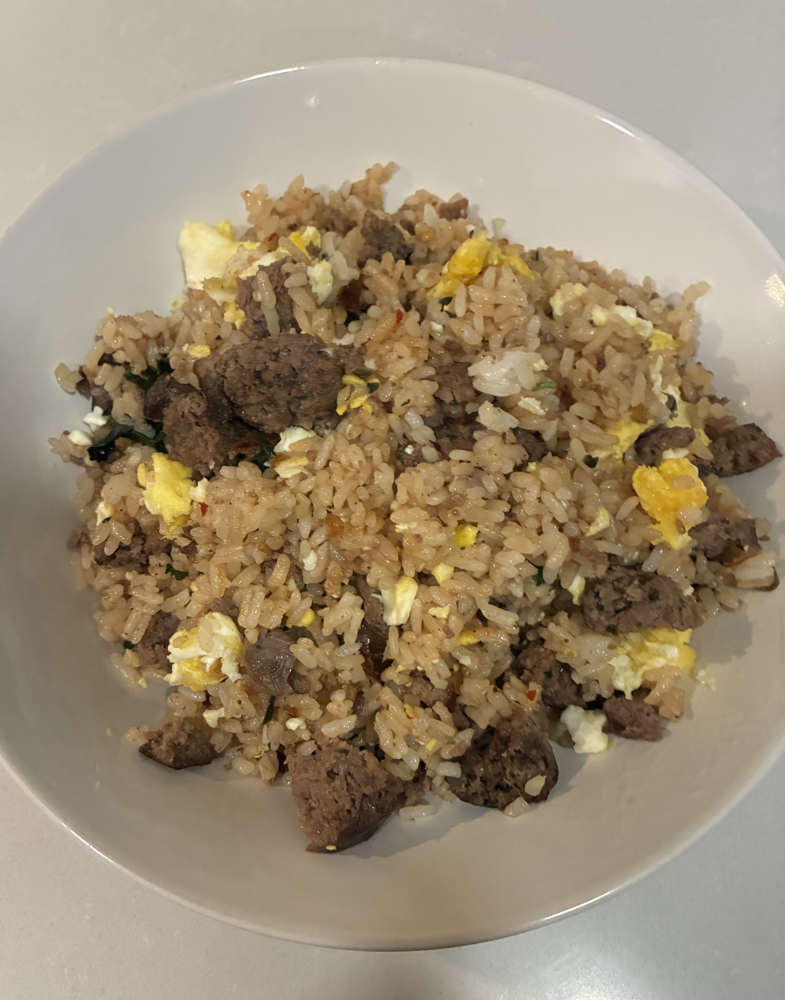

Fried Rice

Ingredients
- Rice
- Coconut oil
- Protein of choice
- Salt
- Pepper
- Minced or powdered garlic
- Soy sauce
- Oyster sauce
- Basil
- Pineapple (optional)
Instructions
- Preheat the air fryer to 375°F.
- Pat the chicken dry and coat lightly with oil.
- Season all sides evenly.
- Cook for 18 to 22 minutes, flipping halfway through.
- Check that the internal temperature reaches 165°F.